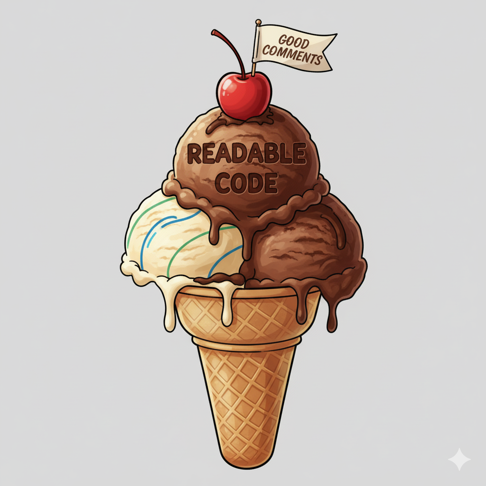

flowchart TD
A[Deadline Pressure] --> D[High Cognitive Load]
B[Complex Problem Solving] --> D
C[Implementation Focus] --> D
D --> E[Commenting Shortcuts]
E --> F[No Comments]
E --> G[Redundant Comments]
H[Comment Rot] --> I[Outdated Comments]
style A fill:#E8EAF6,color:#000
style B fill:#E8EAF6,color:#000
style C fill:#E8EAF6,color:#000
style D fill:#FFE082,color:#000
style E fill:#FFCC80,color:#000
style F fill:#FFAB91,color:#000
style G fill:#FFAB91,color:#000
style H fill:#FFB74D,color:#000
style I fill:#FFAB91,color:#000
To Comment or Not To Comment
Navigating the Art and Science of Code Comments
Indrajeet Patil

Source code: github.com/IndrajeetPatil/to-comment-or-not
What You’ll Learn
- Why commenting matters for code quality and maintainability
- When to comment and when not to comment
- Practical strategies for writing clear, helpful, and meaningful comments
🎯 Goal
Learning to write comments that clarify intent, not echo code.
Despite Python examples, all the mentioned strategies are language-agnostic.
None of this advice is dogma; there can be valid reasons and conventions to break these rules.
“The purpose of commenting is to help the reader know as much as the writer did.”
- Boswell & Foucher
Why Comments Matter
Good comments act as guideposts for navigating complex code.
Why It’s Challenging
Multiple pressures during development make thoughtful commenting difficult.
N.B. Documentation vs. Comments
def is_valid_email(email):
“““Check if email address is valid.
Returns:
True if valid, False otherwise
“““
# RFC 5322 simplified: local@domain format
local_part = r’[a-zA-Z0-9._%+-]+’
domain = r’[a-zA-Z0-9.-]+’
tld = r’[a-zA-Z]{2,}’
pattern = rf‘^{local_part}@domain.{tld}$’
return re.match(pattern, email) is not None
Documentation
- How to use the function
- Parameters & returns
- For function users
Comments
- Why it works this way
- Business rules & context
- For code maintainers
Documentation for public interface, comments for private implementation.
What Not to Comment
Every comment distracts from reading code—make sure it’s worth the interruption.
Don’t use crutch comments
Fix the unclear code instead: \(good code > bad code + comments\).
Don’t duplicate the code in comments
Why not ‘Don’t state the obvious?’
Obvious depends on your audience. Code clear to senior developers may confuse juniors.
Consider team experience when deciding what needs explanation.
Don’t write non-local comments
Don’t retain dead code as comments
Don’t narrate git history
Exception: Bundled/distributed code without git access may need key change notes in comments.
Don’t confuse docs with comments
Don’t write confusing comments
Bad comments are worse than no comments. They mislead readers and create confusion.
What to Comment
Whatever helps the reader understand the code more easily: the what, the why, the how

Your future self as the reader
Comment Decision Workflow
When encountering unclear code, prioritize refactoring over commenting. Only add comments for inherently non-obvious logic.
flowchart LR
A[Code<br/>unclear?] --> B{Can<br/>rename/refactor?}
B -->|Yes| C[Rename/<br/>Refactor]
C --> D{Still<br/>non-obvious?}
B -->|No| D
D -->|Yes| E[Comment<br/>WHY]
D -->|No| F[No comment<br/>needed]
style A fill:#FFE082,color:#000
style B fill:#90CAF9,color:#000
style C fill:#B39DDB,color:#000
style D fill:#90CAF9,color:#000
style E fill:#FFF59D,color:#000
style F fill:#B39DDB,color:#000
“Don’t comment bad code — rewrite it.”
— Kernighan & Plaugher
Explain the Thought Process
Good comments explain business logic, design decisions, and non-obvious requirements.
✅ Comments explain rationale
Document Non-Obvious Logic
Complex logic benefits from explanation—even when developers could eventually figure it out.
Explain Unidiomatic Code
When you intentionally deviate from language conventions, explain why the idiomatic approach doesn’t work and preempt questions.
Highlight Known Flaws
It’s acceptable to document known issues, limitations, or future improvements using action comments.
Common Action Comment Tags
| Tag | Purpose | Example |
|---|---|---|
TODO |
Planned improvement or missing feature | # TODO: Add caching (issue #123) |
FIXME |
Known bug that needs fixing | # FIXME: Fails on negative input (#456) |
HACK |
Temporary workaround for a problem | # HACK: API bug workaround (ticket #789) |
NOTE |
Important clarification or caveat | # NOTE: Must run before init() |
OPTIMIZE |
Performance improvement opportunity | # OPTIMIZE: Use binary search (#234) |
Tip: Use the Better Comments VS Code extension to highlight these tags in your editor.
Aid Comprehension with Examples
Well-chosen examples often clarify complex code more effectively than detailed comments alone.
Legal Comments and External Links
Credit original sources
Credit the source when adapting code from elsewhere, which also provides context for future maintainers.
Link to external references
When implementing specs, algorithms, or standards, provide references where readers can learn more.
Use Comments as Cautionary Text
Cautionary comments prevent well-intentioned “fixes” that break subtle constraints by warning against seemingly obvious “improvements”.
Explain Security-Sensitive Code
Security comments prevent dangerous “simplifications” that introduce vulnerabilities by explaining why “obvious” optimizations break security boundaries.
Document Concurrency Invariants
Concurrency comments prevent race conditions from “optimizations” that remove checks by explaining locking order, invariants, and why seemingly redundant logic matters.
Refactoring to “simplify” ↓
Organize Long Functions
When a function is legitimately complex and shouldn’t be broken down further, use comments to delineate logical sections.
Note: Refactoring into smaller functions is still preferable unless there’s a strong reason (tight I/O coupling, measured performance need, transaction boundaries).
Use section comments to:
- Group related operations
- Mark distinct processing phases
- Improve readability of long functions
- Guide readers through complex logic
How to Comment
Keep them precise and compact.
Use information-dense words
Avoid pronouns
Explain intent, not mechanics
Keep comments updated
Use specific references
Maintain professional tone
Stay objective
Avoid inside jokes
Aside: Comment Aesthetics
While content matters most, consistent formatting improves readability.
Proper indentation
Vertically align end-of-line comments
Block comments with breathing room
Consistent capitalization
Consistent punctuation
Tip: Configure your linter/formatter to enforce these aesthetic choices consistently.
Tools & Techniques
Tool Limitations
What tools CAN do:
- Check comment formatting and style
- Flag TODO/FIXME comments
- Detect missing documentation
- Generate basic API documentation
What they CANNOT do:
- Understand if comments explain the “why”
- Assess comment usefulness and clarity
- Determine if business context is missing
- Evaluate comment accuracy after code changes
- Judge whether comments add value
The fundamental limitation
Tools can enforce format but not value. Good commenting requires human judgment about what information is helpful.
AI as an Ally
Why AI tools can help:
- Analyze code complexity and suggest documentation
- Identify business logic that needs explanation
- Check comment clarity and helpfulness
flowchart TD
H[Human] --> S[Quality Comments]
A[AI] --> S[Quality Comments]
H -.->|Collaborates| A
A -.->|Feedback| H
style H fill:#90CAF9
style A fill:#90CAF9
style S fill:#81C784
Review LLM-Generated Comments
LLMs can overcomment or generate redundant comments, but they can also tighten verbose ones. Always review LLM-generated comments critically.
Code Review
flowchart TD
A[Code Review] --> B[Lower Cognitive Load]
B --> C[Fresh Perspective]
B --> D[Focus on Clarity]
C --> E[Question Assumptions]
C --> F[Spot Missing Context]
C --> O[Find Outdated Comments]
D --> G[Evaluate Intent]
D --> H[Assess Usefulness]
E --> I[Better Comments]
F --> I
G --> I
H --> I
O --> I
style A fill:#90CAF9,color:#000
style B fill:#CE93D8,color:#000
style C fill:#E1F5FE,color:#000
style D fill:#E1F5FE,color:#000
style E fill:#FFE082,color:#000
style F fill:#FFE082,color:#000
style G fill:#FFE082,color:#000
style H fill:#FFE082,color:#000
style O fill:#FFE082,color:#000
style I fill:#B39DDB,color:#000
Fresh eyes catch what you miss: outdated comments, missing context, and unclear intent!
Benefits: Context and Understanding
Well-written comments make complex code comprehensible.
Writing thoughtful comments forces you to articulate your reasoning and design decisions, improving code quality.
Good comments preserve business knowledge and domain expertise for future developers.
Consistent commenting practices reduce cognitive overload and make maintenance safer.

Invest time in thoughtful comments early—practice makes perfect.
Thank You
And Happy Commenting! 😊
Aside: Cross-Language Examples
Syntax varies by language; the distinction is universal.
| Language | Documentation | Comment | Documentation Tools |
|---|---|---|---|
| Python | """docstring""" |
# comment |
Sphinx, pdoc |
| JavaScript | /** JSDoc */ |
// comment |
JSDoc, TypeDoc |
| TypeScript | /** JSDoc */ |
// comment |
TypeDoc, TSDoc |
| Java | /** Javadoc */ |
// comment |
Javadoc |
| Kotlin | /** KDoc */ |
// comment |
Dokka |
| C | /** Doxygen */ |
/* comment */ |
Doxygen |
| C++ | /** Doxygen */ |
// comment |
Doxygen |
| Go | // Doc comment |
// comment |
godoc, pkgsite |
| Rust | /// Doc comment |
// comment |
rustdoc |
| Swift | /// Doc comment |
// comment |
DocC |
| R | #' Roxygen |
# comment |
roxygen2 |
| C# | /// XML Doc |
// comment |
DocFX, Sandcastle |
| PHP | /** PHPDoc */ |
// comment |
phpDocumentor |
| Ruby | # YARD comment |
# comment |
YARD, RDoc |
References
For a more detailed discussion about how to comment, see the following references:
McConnell, S. (2004). Code Complete (2nd ed.). Microsoft Press. (pp. 777-818)
Boswell, D., & Foucher, T. (2011). The Art of Readable Code. O’Reilly Media, Inc. (pp. 45-65)
Martin, R. C. (2009). Clean Code. Pearson Education. (pp. 53-74)
Goodliffe, P. (2007). Code Craft. No Starch Press. (pp. 73-88)
Gregg, E. (2021). Best practices for writing code comments
For more
If you are interested in good programming and software development practices, check out my other slide decks.